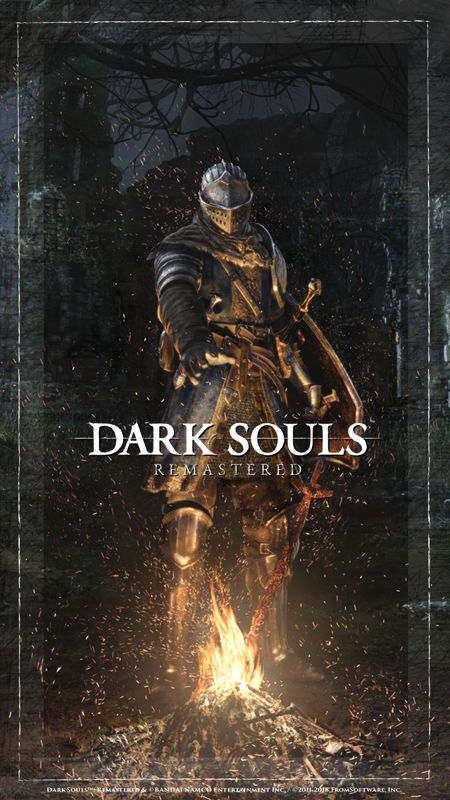
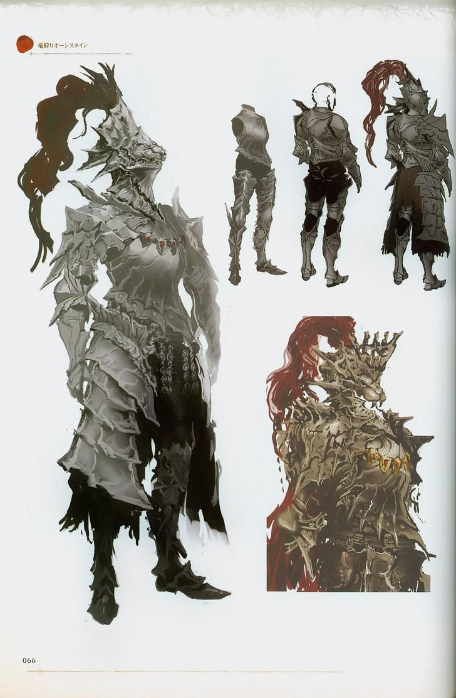

Dark Souls Gallery
Explore stunning visuals from the Dark Souls universe, where every image captures the essence of the game's haunting beauty and intricate design. From towering gothic architecture to meticulously crafted weapons and menacing boss designs, the art direction creates an atmosphere that is both beautiful and terrifying. Each piece in this gallery represents the careful attention to detail that makes Dark Souls' world so immersive and memorable.




Art Style and Visual Design
Dark Souls' distinctive art style masterfully blends gothic architecture with fantastical elements, creating an atmosphere of decay, mystery, and ancient power that feels both beautiful and foreboding. The game's visuals have been universally praised for their meticulous attention to detail, from the crumbling stonework of forgotten castles to the intricate patterns on rusted armor. This immersive world-building doesn't just look good—it tells a story through visual cues, making every location feel like a character in its own right.
Key Visual Elements
- Gothic and medieval-inspired architecture
- Detailed character and enemy designs
- Atmospheric lighting and particle effects
- Rich environmental storytelling
The series' art direction has evolved across titles, with each game introducing new visual innovations while maintaining the core aesthetic that defines the franchise. From the original's stark, shadowy environments to the more colorful yet still ominous worlds of later entries, the visual evolution reflects the series' growth while preserving its signature atmosphere of wonder and dread.